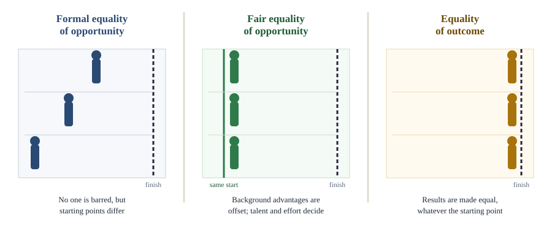

Chapter 5: Equality¶
Equal worth, equal rights, equal chances and the question "equality of what?"
Learning outcomes
When you have finished this chapter you should be able to:
- explain the idea of equal moral worth and why it is the starting point of most modern political theory;
- distinguish formal, political, social and economic equality;
- compare equality of opportunity (formal and fair) with equality of outcome;
- explain the "equality of what?" debate: welfare, resources and capabilities;
- describe luck egalitarianism and relational equality, and the alternatives of priority and sufficiency;
- discuss the arguments for and against affirmative action and reservations.
5.1 Equal in what sense?¶
People are obviously unequal in many ways: in height, strength, talent, health, wealth and luck. When political theorists say that people are equal, they do not deny these facts. They make a moral claim: that every person has equal moral worth, and that their interests and choices deserve equal consideration. This idea was not always accepted. Many societies were built on hierarchies of birth, caste, race or sex, justified by the claim that some people were naturally superior.
The modern idea of equality has several roots: the religious belief that all are equal before God; the Stoic idea of a common human reason; the social contract theorists' claim that people are naturally free and equal; the revolutionary declarations of the late eighteenth century; and the struggles of the nineteenth and twentieth centuries against slavery, caste, colonialism and the subordination of women. Today almost every political theory accepts equal moral worth. Ronald Dworkin argued that the real disagreements are about what treating people as equals requires, a phrase he distinguished from treating them equally (identically). A parent who gives medicine only to the sick child treats both children as equals, though not identically.
Key idea
Equality in political theory is a moral claim about equal worth and equal consideration, not a factual claim that people are the same. The hard question is what equal consideration requires in practice.
5.2 Dimensions of equality¶
Equality can be sought in different spheres of life.
| Dimension | What is equalised | Examples |
|---|---|---|
| Formal or legal equality | Status before the law | Equality before the law; abolition of legal privileges based on birth; the same laws for everyone |
| Political equality | Voice in collective decisions | Universal adult franchise; one person, one vote; equal right to stand for office |
| Social equality | Status and respect in social life | Absence of caste, class or gender hierarchies; equal access to public places |
| Economic equality | Income, wealth or resources | Progressive taxation; social insurance; limits on inequality |
Table 5.1. Four dimensions of equality.
These can come apart. A country may have formal and political equality while social hierarchies and great economic inequality persist. B. R. Ambedkar made this point forcefully when presenting the draft Constitution of India: political equality (one person, one vote, one value) would coexist with social and economic inequality, and he warned that this contradiction could endanger political democracy itself (Chapter 13). Marxists argue more generally that legal and political equality in a capitalist society hides deep economic inequality, which shapes real power.
Formal equality¶
Formal equality is the principle that like cases should be treated alike. It goes back to Aristotle, who held that justice requires treating equals equally and unequals unequally, in proportion to the relevant difference. The principle is necessary but empty until we know which differences are relevant. Race is irrelevant to the right to vote; age is relevant. Sex is irrelevant to holding public office; a medical condition may be relevant to driving a bus. Much of the history of equality consists in showing that differences once thought relevant, such as caste, race and sex, are not.
5.3 Equality of opportunity and of outcome¶
Equality of opportunity¶
Equality of opportunity means that positions and rewards in society should be open to all on the basis of fair competition, not reserved for those of a particular birth or group. Two versions are usually distinguished.
- Formal equality of opportunity ("careers open to talents"): there should be no legal or official barriers to anyone competing for any position, and positions go to the best qualified. It ended aristocratic privilege and is widely accepted.
- Fair (or substantive) equality of opportunity: people with similar talents and willingness to use them should have similar chances of success, whatever their social background. This requires more than removing barriers; it requires public education, health care and other measures to offset the advantages of a privileged upbringing. Rawls made fair equality of opportunity part of his second principle of justice (Chapter 6).
The metaphor of a race is often used. Formal equality of opportunity says that everyone may enter the race. Fair equality of opportunity says that everyone should start from the same line. Critics then ask further questions: even with a fair start, differences of natural talent are a matter of luck; why should those born with talents in demand earn much more? And is a society organised as a race the best kind of society at all?
Equality of outcome¶
Equality of outcome (or of condition) aims at equal results: similar levels of income, wealth or well-being, whatever people's starting points or choices. Few theorists defend strict equality of outcome, but many argue that inequalities of outcome should be reduced. Their reasons include:
- great inequalities of outcome undermine equality of opportunity for the next generation, since wealthy parents can buy advantages for their children;
- economic inequality turns into political inequality, as the rich gain more influence;
- large inequalities damage social relations, creating hierarchy, envy, humiliation and a sense that citizens do not share a common life;
- many inequalities reflect luck rather than desert.
Critics reply that equality of outcome would require intrusive interference with people's choices and with the results of free exchange (Nozick's argument in Chapter 6), would weaken incentives to work and innovate, would ignore differences of effort and choice, and could be achieved only by levelling down: making the better-off worse off without making anyone better off.

Caution: equality of opportunity can justify large inequality
Equality of opportunity is sometimes presented as a moderate alternative to equality of outcome. But it is compatible with very large inequalities of outcome, as long as they result from fair competition. The British socialist R. H. Tawney, in Equality (1931), mocked what he called the "Tadpole Philosophy": the idea that the misery of many tadpoles is consoled by the fact that a few of them will one day become frogs. A society that offers everyone a chance to rise, he argued, is not thereby a society of equals. Whether this is a criticism depends on one's view of whether unequal outcomes from fair competition are just.
5.4 Equality of what?¶
In a lecture of 1979 entitled "Equality of What?", Amartya Sen pointed out that every serious theory of justice wants equality of something. Libertarians want equal rights to liberty; utilitarians give equal weight to everyone's happiness; egalitarians want equal income or resources. The real question is what the right currency of equality is. Three main answers have been defended.
Equality of welfare¶
One might aim to make people equally well off in terms of welfare: happiness, preference satisfaction or well-being. This seems to focus on what ultimately matters. But it faces objections. A person with expensive tastes (who is miserable without fine wine) would be entitled to more resources than a person with modest tastes, which seems unfair to the latter. And a person who has adapted to deprivation and learned to be content with very little (Sen's problem of adaptive preferences) would be entitled to nothing more, which seems to reward oppression.
Equality of resources¶
Ronald Dworkin argued instead for equality of resources. Imagine shipwrecked people on a desert island who divide its resources by an auction in which each starts with an equal number of shells. The result passes an envy test if no one prefers anyone else's bundle of resources to their own. Dworkin added a hypothetical insurance scheme to compensate for handicaps and bad luck in talents. His aim was a distribution that is ambition-sensitive (reflecting people's choices about work and leisure) but endowment-insensitive (not reflecting unchosen differences in natural ability or circumstance).
Equality of capability¶
Sen's own answer was capability: the real freedom people have to achieve functionings they have reason to value, such as being well nourished, being healthy, being educated, moving about freely and taking part in community life. Resources matter only as means, and people differ in their ability to convert resources into functionings. A person who uses a wheelchair needs more resources to achieve the same mobility as others; a pregnant woman needs more food to be well nourished. Equalising resources would leave them worse off in what they can actually do and be. Chapter 6 discusses the capability approach in more detail.
| Currency | What is equalised | Main strength | Main objection |
|---|---|---|---|
| Welfare | Happiness or preference satisfaction | Focuses on what people care about | Expensive tastes; adaptive preferences |
| Resources (Dworkin) | Bundles of goods and opportunities, with insurance for bad luck | Respects responsibility for choices | Ignores differences in converting resources into well-being |
| Capability (Sen) | Real freedoms to achieve valued functionings | Sensitive to human diversity | Which capabilities count, and how to weigh them? |
Table 5.2. Three currencies of equality.
5.5 Luck, choice and relationships¶
Luck egalitarianism¶
Dworkin's distinction between choice and circumstance inspired a family of views called luck egalitarianism, defended in different forms by G. A. Cohen, Richard Arneson and others. Its core claim is that it is unjust for some people to be worse off than others through no fault or choice of their own. Inequalities that result from brute luck (being born disabled, being born into poverty, being struck by lightning) should be corrected; inequalities that result from option luck (losing a deliberate gamble, choosing more leisure over more income) may stand.
The idea has intuitive appeal: we resent unfairness that comes from the accident of birth more than unequal results of free choices. But it faces strong objections.
- Harshness. If a person crashes a motorbike while riding without a helmet, does luck egalitarianism imply that he should be left untreated because his misfortune resulted from choice? Most luck egalitarians try to avoid this conclusion, but critics argue that the theory's logic points towards it.
- Intrusiveness. To separate choice from circumstance, the state would have to investigate and judge people's responsibility for their condition, which can be demeaning.
- The point of equality. In an influential article of 1999, "What Is the Point of Equality?", Elizabeth Anderson argued that luck egalitarianism mistakes the point of equality altogether.
Relational equality¶
Anderson and others (Samuel Scheffler, Jonathan Wolff) defend relational or democratic equality. The aim of equality, on this view, is not to distribute goods according to luck and choice, but to create a society in which people relate to one another as equals: where no one is dominated, exploited, marginalised, humiliated or treated as inferior. Historically, egalitarian movements fought against hierarchies of caste, race, class and gender, not against bad luck. Relational egalitarians want everyone to have what they need to function as an equal citizen (adequate income, education, health, access to public spaces and a voice in decisions), but do not require that every unchosen disadvantage be compensated. Critics ask whether relational equality can say anything about inequalities between people who never interact, or about large inequalities of wealth that leave everyone above the threshold of equal citizenship.
Priority and sufficiency¶
Some theorists doubt that equality as such is what matters.
- Prioritarianism, set out by Derek Parfit in a lecture of 1991, "Equality or Priority?", holds that benefits matter more the worse off the person who receives them. What matters is not how people compare with each other but how badly off they are.
- Sufficientarianism, defended by Harry Frankfurt in "Equality as a Moral Ideal" (1987), holds that what matters is that everyone has enough. Once everyone is above a threshold of sufficiency, inequalities above it are of no special concern.
The levelling-down objection¶
These alternatives are partly motivated by the levelling-down objection. Suppose an inequality could be removed only by making the better-off worse off, without making anyone better off: for example, by blinding the sighted so that they are equal with the blind. Pure egalitarianism seems to say that this is in one respect an improvement, since it reduces inequality. Many find this absurd. Egalitarians reply that equality is one value among others; levelling down is better in one respect (equality) but worse overall.
| Distribution | Group 1 | Group 2 | Group 3 | Total | Worst-off |
|---|---|---|---|---|---|
| A | 10 | 50 | 90 | 150 | 10 |
| B | 30 | 30 | 30 | 90 | 30 |
| C | 25 | 40 | 60 | 125 | 25 |
| D | 10 | 10 | 10 | 30 | 10 |
Table 5.3. Four possible distributions of well-being among three equal groups.
Worked example 5.1: Comparing distributions
Situation. A society of three groups of equal size can choose among the four distributions of Table 5.3. The numbers are levels of well-being (higher is better); a level of 20 is the threshold of a decent life.
Analysis. A utilitarian maximising the total picks A (150). A strict egalitarian concerned only with equality ranks B and D as the most equal and is indifferent between them on equality alone, though any plausible egalitarian also cares about well-being and prefers B. The move from A to D is levelling down: Groups 2 and 3 lose, and Group 1 gains nothing. A prioritarian gives extra weight to the worst off and would probably choose B or C, depending on how much extra weight. Rawls's maximin rule (Chapter 6) picks the distribution whose worst-off group is best off: B (30). A sufficientarian wants everyone above 20: B and C both qualify, and among them C has the higher total. The example shows that "equality" covers several distinct principles that give different answers.
5.6 Equality and difference¶
Treating people identically can sometimes produce inequality. A building with only stairs treats everyone the same but excludes people who use wheelchairs. A test in a language some candidates do not speak well measures language skill rather than the ability it claims to test. Feminist and multicultural theorists have therefore argued that genuine equality sometimes requires recognising differences: special provisions, accommodations or group rights (Chapters 9 and 12). Iris Marion Young argued in Justice and the Politics of Difference (1990) that a supposedly neutral standard often reflects the norms of dominant groups. Critics worry that emphasising group differences can entrench them, and that special treatment can conflict with the principle of treating individuals on their merits.
5.7 Affirmative action and reservations¶
Affirmative action (called positive discrimination in some countries, and reservation or compensatory discrimination in India) refers to policies that give some preference to members of disadvantaged groups in education, employment or political representation. The Constitution of India permits special provisions for socially and educationally backward classes, Scheduled Castes and Scheduled Tribes (Articles 15(4) and 16(4)), and reserves seats for Scheduled Castes and Scheduled Tribes in the Lok Sabha and State Legislative Assemblies (Articles 330 and 332).
Arguments for¶
- Compensation. Groups that suffered historical injustice, such as caste-based exclusion, are owed redress.
- Fair equality of opportunity. Present disadvantages of education, wealth and social networks mean that formal equality of opportunity is not fair; preferences help to level the starting line.
- Diversity and representation. Institutions that include people from all sections of society serve everyone better, gain legitimacy and break stereotypes.
- Dismantling hierarchy. On a relational view, preferences help to end the social hierarchy that excluded some groups from positions of respect and power.
Arguments against¶
- Merit. Positions should go to the best qualified individuals; group preferences can mean that a better-qualified candidate loses out.
- Individual versus group. Benefits may go to the better-off members of a disadvantaged group (in India, the "creamy layer" concept addresses this), while poor members of other groups receive nothing.
- Stigma and division. Preferences may stigmatise beneficiaries as less able and entrench group identities in politics.
- Temporary or permanent? Critics ask when such measures should end; supporters reply that they should continue as long as the disadvantage persists.
Courts and legislatures have tried to balance these concerns: for example, the Supreme Court of India in Indra Sawhney v. Union of India (1992) upheld reservations for Other Backward Classes, excluded the creamy layer and held that reservations should not ordinarily exceed fifty per cent.
Worked example 5.2: Two views of a scholarship scheme
Situation. A university reserves a share of its scholarships for students from groups historically excluded from higher education, admitting some students with lower entrance scores than others who were not admitted.
A merit-based critic argues that the higher-scoring students have been treated unfairly: they were judged by group membership, not individual achievement.
A defender using fair equality of opportunity replies that entrance scores reflect not only talent and effort but unequal schooling and family resources; a student who scored slightly lower despite much worse conditions may have shown more ability. A relational egalitarian adds that a university in which some groups are almost absent reproduces social hierarchy.
What the debate turns on. Whether "merit" is accurately measured by the test, whether group membership is a good proxy for disadvantage, and whether the scheme is designed to reach those who need it most.
Summary
- Modern political theory starts from equal moral worth: people are to be treated as equals, which is not always the same as treating them identically.
- Equality has legal, political, social and economic dimensions, which can come apart; Ambedkar warned of the contradiction between political equality and social and economic inequality.
- Formal equality of opportunity removes barriers; fair equality of opportunity seeks equal chances for equally talented people whatever their background; equality of outcome seeks equal results and faces objections about choice, incentives and levelling down.
- Sen's question "equality of what?" leads to rival currencies: welfare, resources (Dworkin) and capabilities (Sen).
- Luck egalitarians would neutralise brute luck but not choice; relational egalitarians (Anderson) want people to relate as equals; prioritarians (Parfit) give priority to the worse off; sufficientarians (Frankfurt) want everyone to have enough.
- Affirmative action and reservations are defended as compensation, fair opportunity, diversity and the dismantling of hierarchy, and criticised in the name of individual merit and for their side effects.
5.8 Exercises¶
Exercise 1
Explain Dworkin's distinction between treating people equally and treating them as equals, with an example.
Answer
Treating people equally means giving them identical treatment or shares. Treating them as equals means showing equal concern and respect for each, which may require different treatment. Example: in a flood, a government that sends the same amount of aid to every district treats them equally; one that sends more aid to the worst-hit districts treats their residents as equals.
Exercise 2
Distinguish formal from fair equality of opportunity. Which would require public spending on schools in poor areas, and why?
Answer
Formal equality of opportunity requires only that positions be open to all, with no legal barriers and selection on qualifications. Fair equality of opportunity requires that people with similar talent and motivation have similar chances whatever their social background. Fair equality of opportunity would require spending on schools in poor areas, because unequal schooling gives children of equal ability unequal chances.
Exercise 3
State two objections to equality of welfare as the currency of equality.
Answer
(1) Expensive tastes: someone who needs costly goods to be satisfied would claim more resources than someone with modest tastes, which seems unfair. (2) Adaptive preferences: someone who has adjusted to deprivation and is content with little would be owed nothing more, so equality of welfare could endorse the results of oppression.
Exercise 4
What is the difference between brute luck and option luck, and why does it matter to luck egalitarians? Give one criticism of the view.
Answer
Brute luck is fortune that is not the result of a deliberate gamble (being born with a disability); option luck is the outcome of a deliberate, calculated risk (losing an investment). Luck egalitarians hold that inequalities from brute luck should be corrected, but those from option luck may stand, since people are responsible for their choices. Criticism: the view seems to imply abandoning people whose misfortune results from bad choices (the uninsured reckless driver), and it requires intrusive judgements about responsibility (Anderson).
Exercise 5
In Worked example 5.1, which distribution would a sufficientarian with a threshold of 20 regard as acceptable, and which would a prioritarian probably choose? Explain.
Answer
A sufficientarian accepts any distribution in which everyone has at least 20: B and C. A prioritarian gives extra weight to gains for the worse off; A has a very low worst-off level (10), and D is low for everyone. The prioritarian would choose B or C, depending on how much extra weight is given: with strong priority B (worst-off 30); with weaker priority C, whose total is higher and whose worst-off level (25) is still decent.
Exercise 6
What is the levelling-down objection, and how do egalitarians reply?
Answer
The levelling-down objection says that if equality has value in itself, making the better-off worse off without benefiting anyone would be in one respect an improvement, which seems absurd. Egalitarians reply that equality is one value among several: levelling down is better in respect of equality but worse overall, so egalitarianism need not recommend it. Others move to prioritarianism, which avoids the objection.
Exercise 7
Give two arguments for and two against reservations in public employment.
Answer
For: (1) compensation for historical exclusion; (2) fair equality of opportunity in a society where background shapes qualifications (also: representation and diversity in public institutions; breaking social hierarchy). Against: (1) it can override individual merit; (2) benefits may go to the better-off members of beneficiary groups while poor members of other groups are excluded (also: stigma; entrenching group identities).
5.9 Quiz¶
Check yourself: equality
Exercise 1
Who asked "Equality of what?" in a lecture of 1979?
- Ronald Dworkin
- Amartya Sen
- John Rawls
- Derek Parfit
Answer
Amartya Sen
Exercise 2
Match each thinker with a view.
| A | B |
|---|---|
| Dworkin | Prioritarianism |
| Anderson | Sufficiency |
| Parfit | Equality of resources |
| Frankfurt | Relational equality |
Answer
Dworkin — Equality of resources; Anderson — Relational equality; Parfit — Prioritarianism; Frankfurt — Sufficiency
Exercise 3
The view that inequalities due to unchosen circumstances should be corrected, but not those due to choices, is called
- luck egalitarianism
- sufficientarianism
- libertarianism
- utilitarianism
Answer
luck egalitarianism
Exercise 4
Making the better-off worse off without making anyone better off, in order to reduce inequality, is called
- levelling up
- levelling down
- maximin
- the envy test
Answer
levelling down
Exercise 5
Which British socialist wrote Equality (1931)? (surname)
Answer
Tawney / R. H. Tawney
Exercise 6
Dworkin's test that no one should prefer another's bundle of resources to their own is called
- the harm test
- the envy test
- the veil of ignorance
- the difference principle
Answer
the envy test
Exercise 7
Which case upheld OBC reservations, excluded the creamy layer and set a normal ceiling of fifty per cent?
- Kesavananda Bharati
- Indra Sawhney
- Maneka Gandhi
- Minerva Mills
Answer
Indra Sawhney